Cobertura de Eventos ao Vivo
Shows, shows de humor com vários personagens, aniversários, casamentos, chá de revelação, eventos religiosos e institucionais — captação mobile do início ao fim.
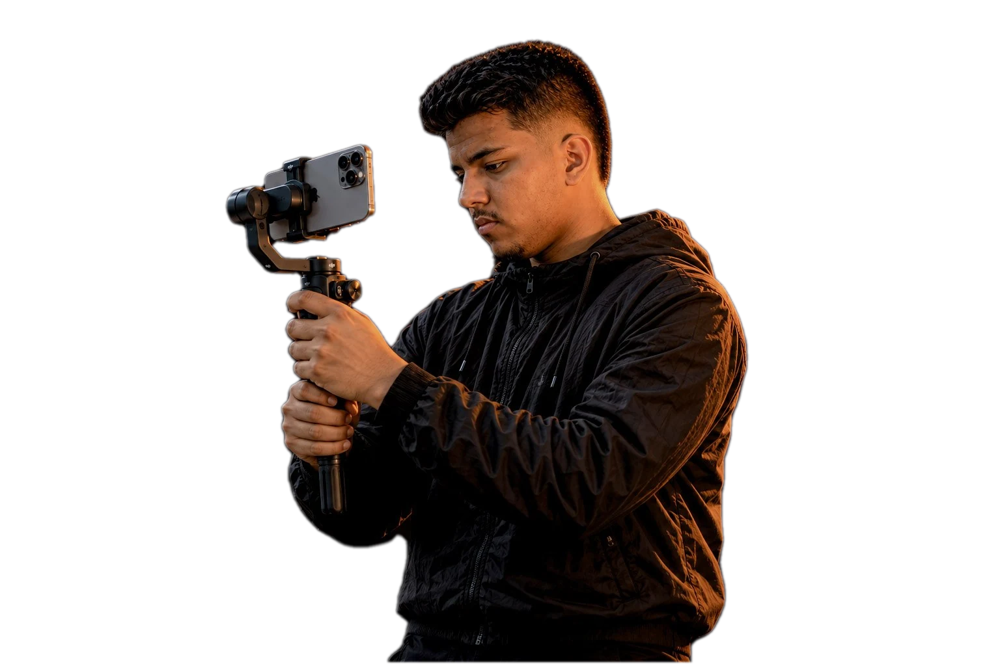
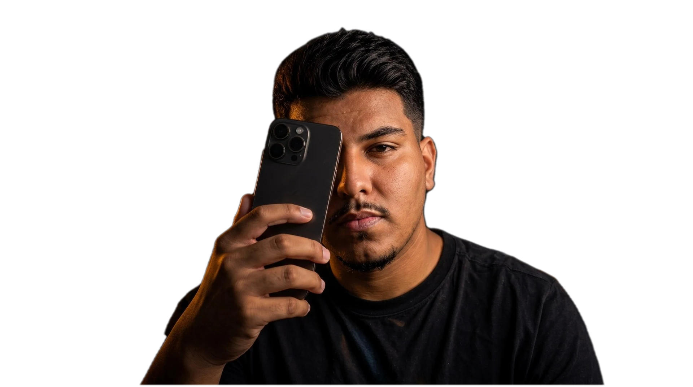
VisãoRitmoHistórias
Histórias reais.
Imagem que permanece.
Role para explorar
Por trás da câmera
Comecei com um celular na mão e a vontade de contar histórias reais, do jeito que elas acontecem.
Sou William Sousa, o Will Rec — videomaker mobile freelancer em Teresina desde 2025. Meu foco é estar presente no momento, encontrar os melhores takes e transformar o que acontece em conteúdo que continua vivo depois do evento.
O que eu faço
Da captação mobile ao roteiro do anúncio — cada entrega pensada pro formato onde ela vai rodar.
Shows, shows de humor com vários personagens, aniversários, casamentos, chá de revelação, eventos religiosos e institucionais — captação mobile do início ao fim.
Conteúdo publicado enquanto o evento ainda acontece — sua audiência acompanha ao vivo, não uma semana depois.
Anúncios e vídeos institucionais para empresas e lojas locais, com direção de arte e exportação pronta pra cada rede.
Direção de takes, roteiro e sugestão de trilha sonora — pra cada anúncio ter começo, meio e fim, não só imagens soltas.
Acompanhamento mensal pra influenciadores, artistas e marcas que precisam de conteúdo constante — combinamos tudo direto no WhatsApp.
Orçamento inteligente
Responda algumas perguntas rápidas e a IA calcula uma faixa de preço na hora, já considerando duração, distância, prazo e o que você precisa receber no final.
Diferenciais
Não é só apontar a câmera. É entender o que faz alguém parar de rolar o feed.
Sou desenvolvedor web e trabalho com IA aplicada — entrego roteiro, copy e direção estratégica, não só captação e edição.
Reels e Stories no ar enquanto a festa ainda tá rolando — sua audiência sente que tá lá.
Esse orçamento que você acabou de calcular? Fui eu que programei, com IA. É o mesmo olhar técnico que entra em cada job.
Conexão com criadores e artistas locais de alcance relevante — seu conteúdo circula além do seu próprio perfil.
Trabalhos
Uma amostra do que já rodou por aí. O acervo completo fica no Drive.
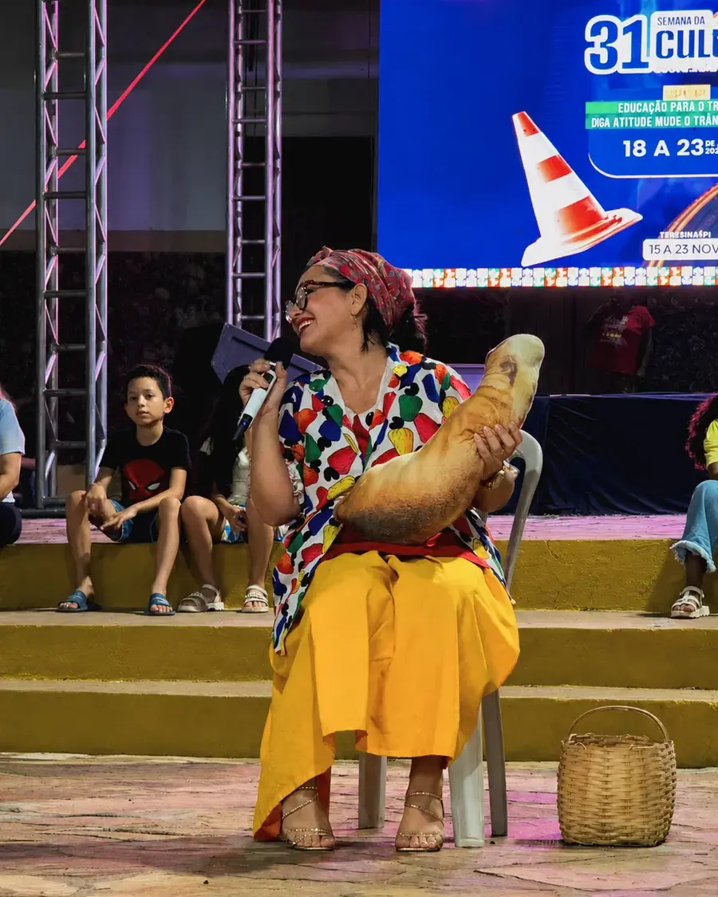
01 Shows de HumorCaptação de palcoVer no Drive ↗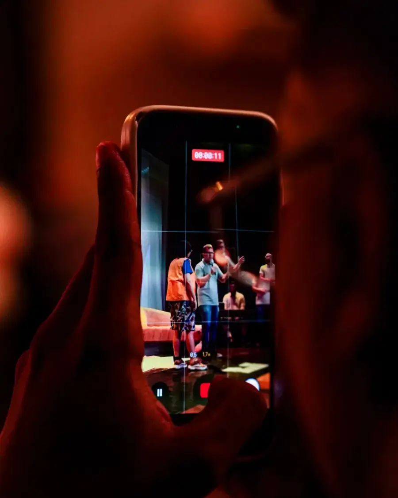
02 BastidoresMaking ofVer no Drive ↗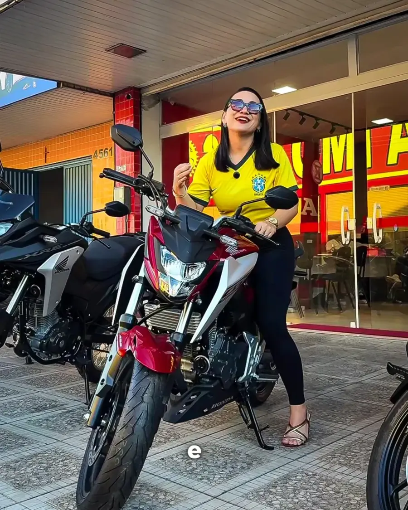
03 ComerciaisEmpresas & lojas locaisVer no Drive ↗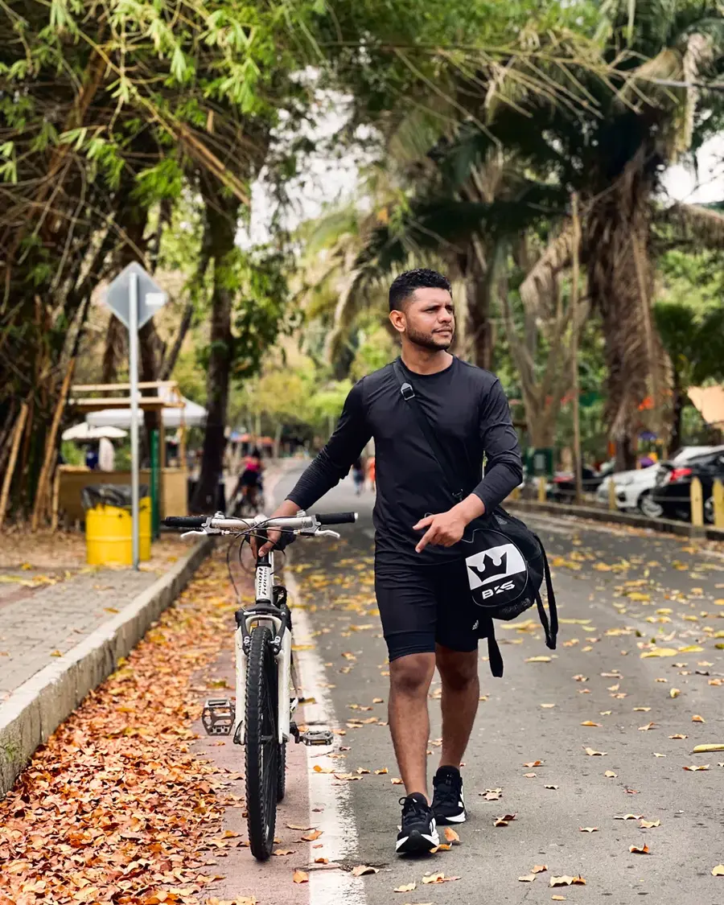
04 DocumentárioRegistro & lifestyleVer no Drive ↗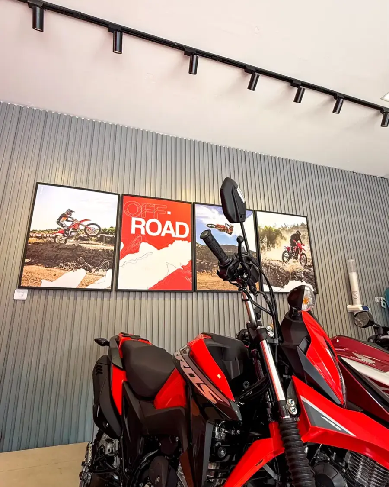
05 ConcessionáriasMotos & showroomVer no Drive ↗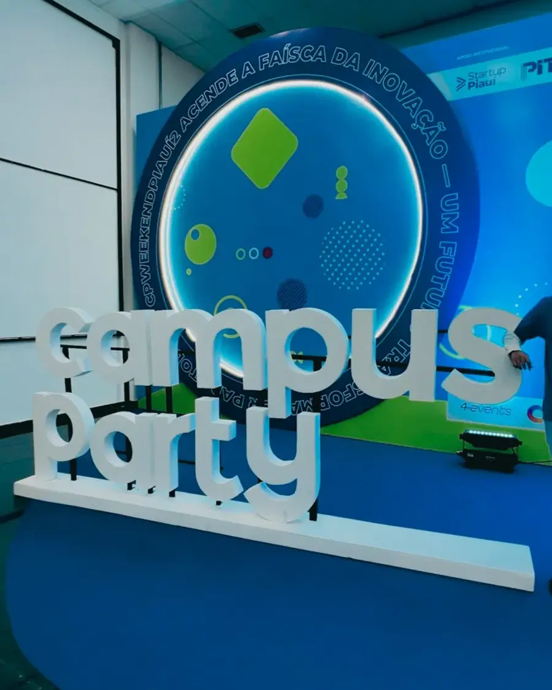
06 Eventos CulturaisShows & festivaisVer no Drive ↗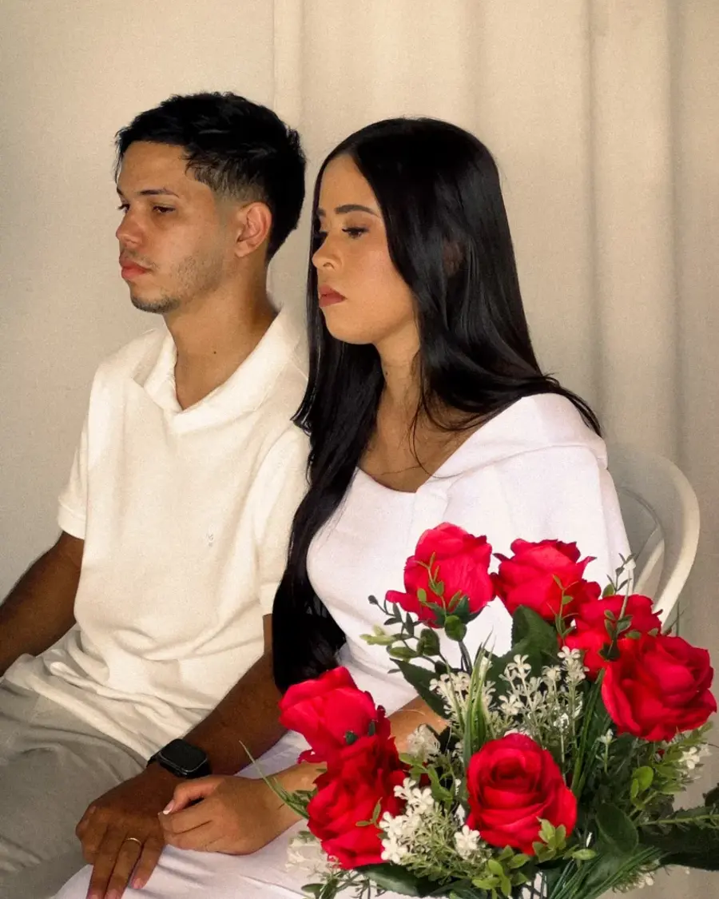
07 CasamentosCerimônia & making ofVer no Drive ↗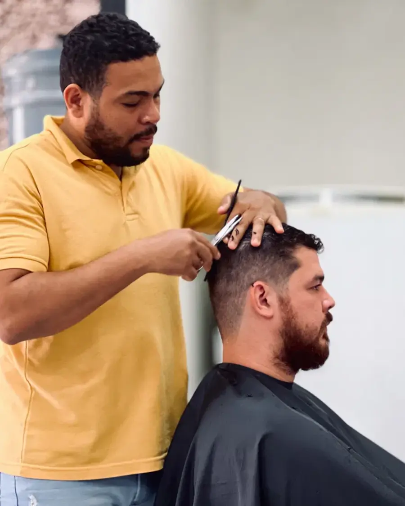
08 Barbearias & EstéticaAtendimento & bastidoresVer no Drive ↗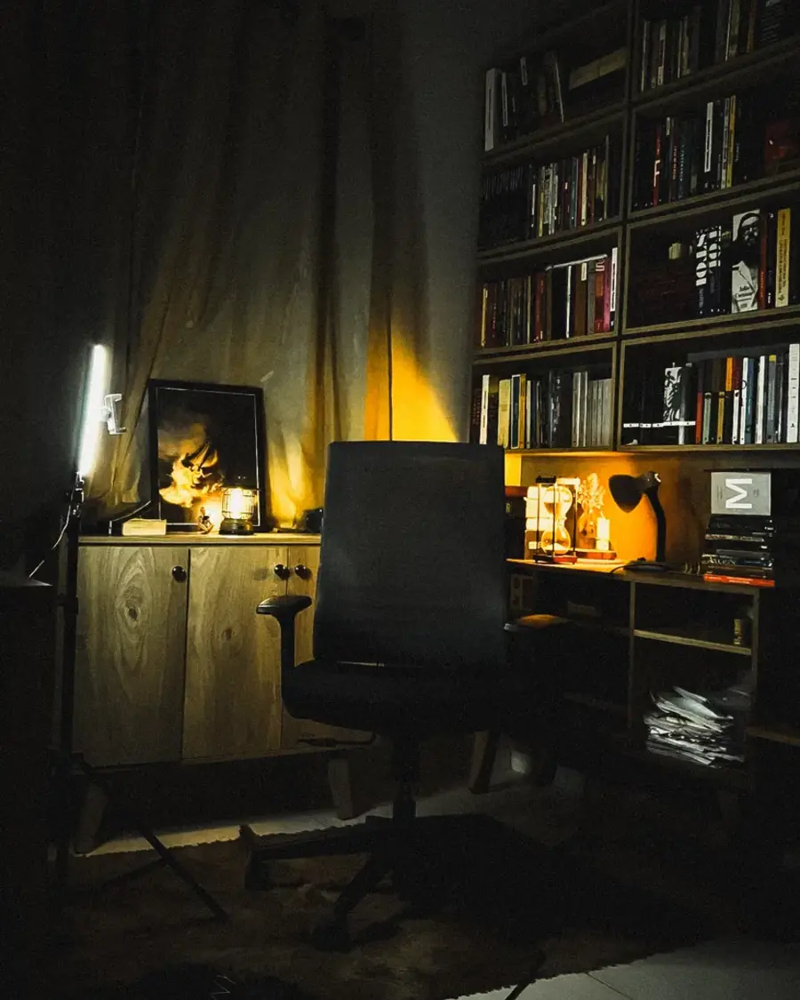
09 InstitucionaisVídeos corporativosVer no Drive ↗01 / 09
Ver acervo completo no DriveFeedback real
Resultado bom chama atenção. Quando o cliente faz questão de mandar mensagem depois, vira prova de que o conteúdo funcionou.
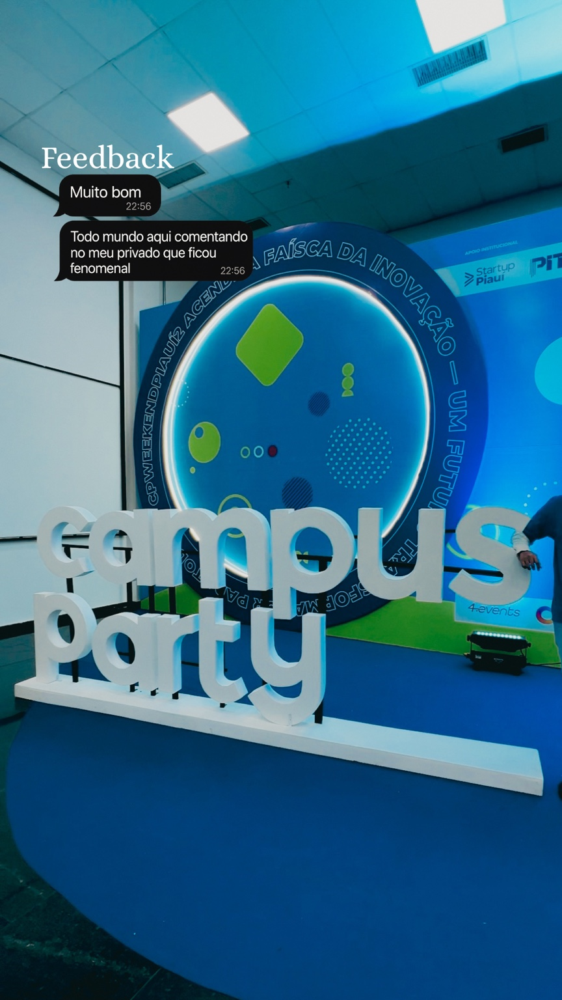
“Todo mundo aqui comentando no meu privado que ficou fenomenal.”
“Ficou tudo muito bom 🙌 ❤️ Você arrasa”
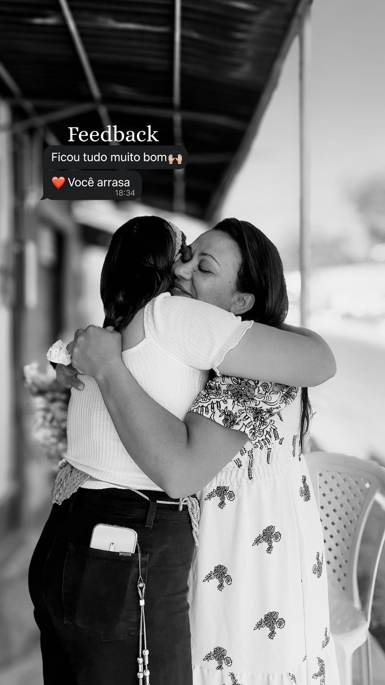
Mensagens reais de clientes — retornos de trabalhos que aconteceram de verdade.
Vamos gravar?
Chama no WhatsApp pra combinar data, formato de entrega e detalhes — resposta rápida, direto com o Will.